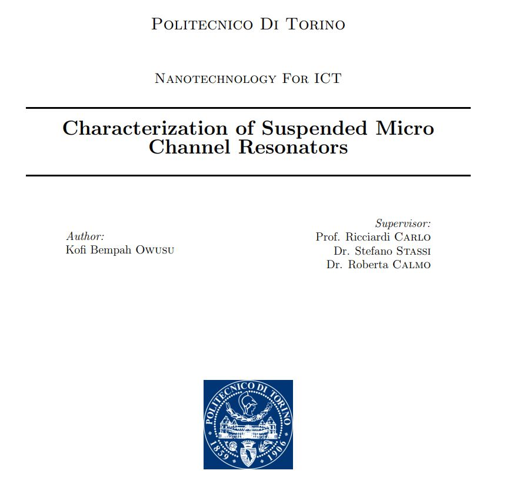
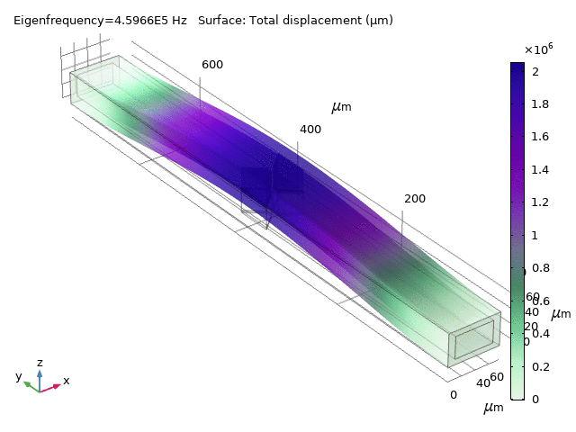
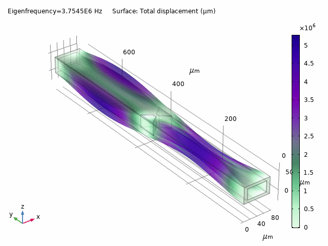

Work Experience
Software Engineer at CWS SRL
2020 - 2021
- Created and maintained back-end API services using Flask.
- Created system administration scripts using Python to automate the processing and deployment of mission-critical data.
- Tasked with migrating in-house data pipelines to a cloud-based solution using AWS.
Software Engineer at Best Engage
2019 - 2020
- Developed and designed GIS web applications with the ArcGIS JavaScript API
- Wrote and published geoprocessing services using Python and ArcPy
- Created backend user authentication systems with PHP and MySQL
Geophysicist at GNPC (Ghana National Petroleum Corporation)
2012 - 2013
- Performing seismic to well ties.
- Undertaking seismic interpretation of geological structures using seismic micro technology kingdom suite.
- Assisting the geological department in the generation of geological framework and geological maps.
- Assisting in the formation evaluation and estimation volumetrics and risk assessment.
Projects
Characterization of suspended micro channel resonators
The Suspended Microchannel Resonators (SMRs) are recently attracting great attention in the biosensing field, and in particular in the density and mass monitoring of cells, bacteria growth and particles loading. One of the main drawback in the implementation of this platform in lab-on-chip devices is represented by the time consuming and expensive fabrication approach used to create the SMR itself. In fact, in order to realized a buried channel in a suspended structure complex fabrication methods are needed, which requires several photo lithographic, depositions and etching process. In this work it has proposed an innovative method of fabrication based on the femtosecond laser writing. In particular a glass SMR has been fabricated optimizing a two steps fabrication process, which includes the patterning of the buried channel and of the suspended beam followed by a chemical etching of the exposed substrates
- In total four suspended microchannel resonators were model and characterized in this study, characterized,by four different constriction geometries.
- The four suspended micro channel resonators were model using the multiphysics comsol applying the solid mechanics suite.
- The first flexural eigenfrequencies for the four resonators were theoretical computed to be 1.0334 MHz, 1.0336 MHz, 1.0905 MHz and 0.4938 MHz respectively.



Volunteer Experience
Physics teacher at Ideal Colledge Takoradi
2009 - 2012
Helped students with any computer problems. Mainly helped with networking, typing, basic instruction, and troubleshooting.